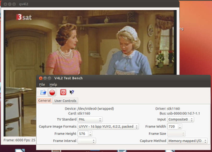
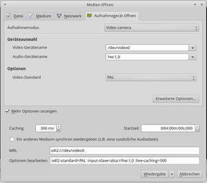

Videograbbing
Dieser Artikel wurde für die folgenden Ubuntu-Versionen getestet:
Ubuntu 14.04 Trusty Tahr
Zum Verständnis dieses Artikels sind folgende Seiten hilfreich:
"Videograbbing" meint das Betrachten oder Aufnehmen (= Digitalisierung) von Videos, mit und ohne Ton, von externen analogen Videoquellen mittels einer TV-Karte oder eines Videograbbers.
Dieser Artikel bezieht sich ausschließlich auf Aufnahmegeräte die vom Video4Linux-Framework (v4l2) unterstützt werden. Video4Linux wurde ursprünglich für analoges Antennen-TV entwickelt, das aber in Europa inzwischen weitgehend durch DVB-T ersetzt wurde. Für folgende Geräte wird v4l2 weiterhin genutzt:
analoge TV-Karten mit separatem Composite (gelbe Cinch Buchse) und/ oder S-Video Eingang und Audio Eingängen,
Video-Capture-Karten ohne Tuner (so genannte Videograbber),
die meisten Webcams, auch die in Notebooks eingebauten Modelle,
Spezialgeräte wie z.B. USB-Mikroskope oder USB-Endoskope.
Im weiteren Artikel ist vereinfachend nur von einer TV-Karte die Rede.
Hinweis:
Im Unterschied zu den großen Lösungen wie MythTV oder VDR geht es hier darum, ohne großen Installationsaufwand eine Videoquelle zu betrachten und Aufnahmen zu erstellen.
Die Angaben in diesem Artikel wurden mit einem EasyCAP DC 60 Videograbber und einem Medion TV-Tuner 7134 PCMCIA auf einem System mit 2 GB RAM und einer Dualcore-CPU mit 1,83 Mhz getestet.
Anwendungsgebiete¶
Betrachten und Digitalisieren von VHS-Kassetten (VHS rippen)
Nutzung einer Überwachungskamera, Mitschnitte erstellen von einer Webcam, einem USB-Mikroskop ...
Fernsehen/ Aufnehmen vom Sat- oder Kabelreceiver
Hardwarevoraussetzungen¶
Neben einer TV-Karte, die vom Linux Kernel unterstützt wird, benötigt man zusätzlich passende Anschlusskabel und Adapter mit denen die Videoquelle an die TV-Karte angeschlosen werden kann. Ein VHS-Rekorder mit analogem Antennenausgang kann auch genutzt weden wenn die TV-Karte nur über einen analogen Antenneneingang verfügt.
Beim Hochfahren des Systems bzw. beim Einstecken der TV-Karte (PCMCIA oder USB) wird für jedes vom Kernel erkannte Gerät ein Geräteknoten (/dev/video0 /dev/video1 ... 2 ...) angelegt.
Einer eingebauten Webcam wird in Normalfall immer der Knoten /dev/video0 zugeordnet.
Schnelltest der TV-Karte¶
Mit dem Befehl
ls /dev/video*
erfährt man, ob Video-Geräteknoten angelegt wurden.
Wenn der Zugriff verweigert wird, dann kann mit
sudo chmod a+r /dev/video0
das Videogerät für alle Nutzer lesbar gemacht werden.
Schnelltest mit qv4l2¶
 Mit dem kleinen grafischen Programm qv4l2 kann man über die "Start Capturing"-Funktion sehr schnell die TV-Karte überprüfen.
Qv4l2 kann aber auch die Videonorm (PAL oder NTSC) einstellen und einen der Anschlüsse an der TV-Karte auswählen.
In einem eigenen Tab befinden sich Schieberegeler für Bildeinstellungen (Helligkeit, Kontrast ...).
Zusätzlich eignet sich qv4l2 dazu, die Parameter der an die TV-Karte angeschlossenen Videoquelle, wie Videogröße und FPS auszulesen.
qv4l2 (QT v4l2 test utility)
 mit apturl
mit apturl
Paketliste zum Kopieren:
sudo apt-get install qv4l2
sudo aptitude install qv4l2
Wenn mehrere analoge TV-Karten, z.B. eine Webcam und ein Grabber, angeschlossen sind, kann mit der Angabe des Geräteknotens z.B. mit
qv4l2 /dev/video1
das entsprechende Gerät ausgewählt werden.
Wenn die TV-Karte nicht erkannt wird¶
Wenn der Eintrag /dev/video0 überhaupt nicht vorhanden ist, dann ist noch Handarbeit für die Installation nötig. Ein Blick auf die Ausgabe von
dmesg
gibt detaillierte Informationen über die geladenen Treiber und eventuelle Fehlermeldungen.
Mit
lsusb
oder
usb-devices
lassen sich USB Geräte identifizieren, für PCI und PCMCIA Geräte erledigt das der Befehl
lspci
.
Auf den Seiten Webcam und TV-Karten findet sich mehr Information zur Identifikation der TV-Karte. In einer Hardwaredatenbank z.B. auf linuxtv.org  kann man nachsehen, ob die eigene Karte von Linux unterstützt wird.
kann man nachsehen, ob die eigene Karte von Linux unterstützt wird.
Konfiguration¶
Videogerät¶
 Für die Konfiguration der Betrachter- und Aufnahmeprogramme muss man die Gerätedatei (/dev/video0 /dev/video1 ... 2 ...) der TV-Karte, die man für das Videograbbing nutzen will, kennen.
Für die Konfiguration der Betrachter- und Aufnahmeprogramme muss man die Gerätedatei (/dev/video0 /dev/video1 ... 2 ...) der TV-Karte, die man für das Videograbbing nutzen will, kennen.
Hat die TV-Karte mehrere Eingänge werden diese als Input angesprochen. In der Syntax von MPlayer sieht das dann bei einer Karte mit Analog-TV, Composite (CVBS), und S-Video Eingängen (z.B. Medion TV-Tuner 7134 PCMCIA) so aus:
Analog TV:
device=/dev/video0:input=0Composite:
device=/dev/video0:input=1S-Video:
device=/dev/video0:input=2
Auch wenn es mehrere Eingänge gibt, kann immer nur ein Anschluss der TV-Karte gleichzeitig verwendet werden!
Konfiguration mit qv4l2¶
Qv4l2 liefert alle wichtigen Informationen über die TV-Karte: Höhe und Breite des Videobildes, das Videobildformat, ein Liste der Eingänge der Karte, eine Liste der unterstützten Fernsehnormen und den Namen des Kartentreibers. Diese Daten werden für die Kommandozeilenprogramme MPlayer, MEncoder und Avconv benötigt.
Eingang und TV-Norm auswählen¶
Mit qv4l2 ist es möglich während einer Wiedergabe oder Aufnahme von einer TV-Karte zwischen den Eingängen der Karte hin und her zu schalten. Dafür muss man in der Drop down Liste der Eingänge einfach einen anderen auswählen.
Einige Programme z.B. avconv können die Fernsehnorm nicht selbst einstellen. Mit qv4l2 kann die Fernsehnorm des Videosignals über eine Drop down Liste festgelegt werden.
Audiogerät¶
ALSA-Soundsystem¶
Aus Sicht des ALSA-Soundsystems gilt die TV-Karte einfach als weitere Soundkarte. Weil in der Regel eine Soundkarte im System vorhanden ist, ist die erste TV-Karte die zweite Soundkarte. Die Nummern der Soundkarten können mit den Befehl
cat /proc/asound/cards
Beispiel für die Ausgabe auf der Konsole:
0 [Intel ]: HDA-Intel - HDA Intel
HDA Intel at 0xf0580000 irq 43
1 [EasyALSA0 ]: easycapdc60 - easycap_alsa
easycap_alsa
2 [SAA7134 ]: SAA7134 - SAA7134
saa7134[0] at 0x48000000 irq 18in Erfahrung gebracht werden. In der Syntax von ALSA hat der Eingang der zweiten Soundkarte die Bezeichnung: hw:1,0. In der Syntax von MPlayer wird die Soundeingabe der TV-Karte so angesprochen:
alsa:adevice=plughw.1,0oder einfachalsa:adevice=hw.1
(Achtung, in MPlayer und MEncoder wird der Doppelpunkt in der ALSA Syntax (hw:1,0) durch einen einfachen Punkt (hw.1,0) ersetzt!
Alternativ kann der Name der Soundkarte (steht hinter der Nummer in eckigen Klammern) angegeben werden. Das ist bei manchen Webcam-Modellen notwendig. Beispiel für MPlayer:
alsa:adevice=plughw.SAA7134
Siehe auch Sound Problembehebung.
OSS¶
Hinweis:
Das Audiosignal wird im OpenSoundSystem auf /dev/dsp ausgegeben. Um den Ton von der TV-Karte zu bekommen, müssen die Mixereinstellungen (am Besten mit alsamixer in der Konsole) entsprechend angepasst werden.
In der Syntax von MPlayer wird die Soundeingabe über OSS so angesprochen:
:adevice=/dev/dsp
Ton aktivieren¶
Um den Ton von der TV-Karte zu bekommen müssen gegebenenfalls die Mixereinstellungen (am Besten mit alsamixer in der Konsole) entsprechend angepasst werden.
Audio über Line-in¶
Wenn die TV-Karte keinen Audioeingang hat (z.B. eine Webcam), oder wenn er einfach nicht funktioniert, dann kann das Audiokabel auch am Line-in- (oder Mikrofon-) Eingang der Soundkarte angeschlossen werden. Im Betrachter-/Aufnahmeprogramm müssen dann nur die entsprechenden Parameter der Soundkarte (z.B. bei ALSA: hw:0,0) angegeben und die Mixereinstellungen entsprechend angepasst werden.
Programme zum Betrachten und Aufnehmen¶
Hinweis:
Alle folgenden Beispiele gehen davon aus, dass das Videosignal vom Geräteknoten /dev/video0 kommt, die Input-Nummer ist 1 und die TV-Karte wird von ALSA als zweite Soundkarte registriert (Nummer = 1!). Bei einer anderen Konfiguration des Systems müssen die Angaben für VLC, MPlayer/ MEncoder oder Avconv entsprechend der Konfigurationshinweise (siehe oben) geändert werden.
VLC¶
Der VLC-Mediaplayer eignet sich in der Version 2.x derzeit am Besten für das Videograbbing in Ubuntu weil er die zur Verfügung stehenden v4l2 Geräte und Soundkarten automatisch erkennt.

V4L2 Aufnahmegerät in VLC öffnen¶
Im Menü "Medien > Aufnahmegerät öffnen" (siehe Bild) wält man als Aufnahmemodus "Video camera" aus.
Mit einem Klick auf den Knopf rechts neben dem Feld "Video-Gerätename" kann man /dev/video0 aus der erscheinenden Liste auswählen. Der Videostandard sollte entprechend der angeschlossenen Videoquelle (in Europa: PAL) ausgewählt werden. In den "Erweiterten Optionen" kann u.a. eine andere Input Nummer als 1 eingestellt werden.
Will man auch den Ton wiedergeben, kann man mit einem Klick auf den Knopf rechts neben "Audio-Gerätename" hw:1,0 aus der Liste auswählen (bzw. /dev/dsp bei vorhandenem OSS).
Mit einem Klick auf "Wiedergabe" wird der Videostream und ggf. der Ton abgespielt. Über das Menü kann man dann noch das Seitenverhältnis des Videos ändern, den Deinterlacer einschalten und weitere Anpassungen vornehmen.
Aufnehmen mit VLC¶
Um ein Video mit VLC aufzunehmen, wählt man im Dialog "Aufnahmegerät öffnen" unten statt "Wiedergabe" - "Konvertieren/ Speichern" aus. Im nächsten Dialog gibt man den Namen der Zieldatei (des Videos) an und wählt ein Profil (das Dateiformat) aus. Es stehen viele Profile zur Auswahl, die aber nicht alle für die Videoaufnahme von analogen Quellen geeignet sind.
Das Profil "Video - DIV3 + MP3 (ASF)" kann als Einziges derzeit für das Videograbbing mit Ton empfohlen werden.
Hinweis:
Bei einigen Profilen sind die Bitraten für den Video- und Audioencoder standardmäßig sehr niedrig angesetzt. Über den Button können die Einstellungen für die Video- und Audioqualität des Profils noch individuell angepasst werden. Durch Erhöhen der Videobitrate auf 1200 kann eine ausreichende Qualität der Aufnahme erreicht werden.
Betrachten mit VLC (ALSA) auf der Kommandozeile¶
VLC kann auch als reines Kommandozeilentool verwendet werden. Der folgende Befehl startet die gleichzeitige Video- und Audiowiedergabe:
cvlc v4l2:///dev/video0:input=1:width=720:height=576:norm=PAL:input-slave=alsa://plughw:1,0 --demux rawvideo
Mit dem Befehl
cvlc -H
erhält man eine Liste mit allen in Vlc verfügbaren Kommandozeilenparametern.
MPlayer und MEncoder¶
MPlayer (bzw. mplayer2) ist ein unviersaler Kommandozeilen-Mediaplayer der auch Video4Linux Quellen wiedergeben kann. MEncoder ist das zugehörige Encodierungsprogramm mit der gleichen Kommandozeilensyntax wie MPlayer.
Wiedergabe mit MPlayer¶
Ohne Ton¶
Der folgende einfache Befehl schaltet MPlayer in den v4l2 Modus und startet die Wiedergabe von /dev/video0.
mplayer tv://
Mit der Option -tv können an MPlayer Einstellungsparameter für den Videoeingang übergeben werden:
mplayer tv:// -tv driver=v4l2:width=720:height=576:outfmt=uyvy:device=/dev/video0:input=1:norm=PAL:fps=25 -nosound
Wiedergabe mit Ton (ALSA)¶
Achtung!
Anders als in früheren Ubuntuversionen eignet sich MPlayer derzeit nur bedingt für die gleichzeitige Wiedergabe von Video und Ton. Ein Einfrieren des Bildes oder die Verschiebung der Tonspur können auftreten.
mplayer tv:// -tv driver=v4l2:width=720:height=576:outfmt=uyvy:device=/dev/video0:input=1:norm=PAL:fps=25:alsa:amode=1:forcechan=2:audiorate=48000:adevice=plughw.1,0:forceaudio:immediatemode=0 -ao sdl -vo sdl
Mit den beiden Optionen -ao (audio out) und -vo (video out) kann ein bestimmter Audio- bzw. Videoausgabtreiber für eine optimale Wiedergabge ausgewält werden.
Der Befehl
mplayer -ao help -vo help
liefert eine Liste aller im System verfügbaren Video- und Audioausgabetreiber. Genauere Informationen bietet die Manpage von MPlayer.
Wiedergabe mit Ton (OSS)¶
mplayer tv:// -tv driver=v4l2:width=720:height=576:outfmt=uyvy:device=/dev/video0:input=1:norm=PAL:fps=25:amode=1:forcechan=2:audiorate=48000:adevice=/dev/dsp:forceaudio:immediatemode=0 -ao oss,sdl -vo sdl
Aufnehmen mit MEncoder¶
Bei der Aufnahme mit MEncoder entstehen, in Kombination mit den unten angegebenen Filtern, Videodateien die nicht mehr umkodiert werden müssen.
DivX/avi ist ein speichersparendes universales MPEG4/MP3-Format (ca. 10MB/ Minute), das von nahezu allen Media- und Hardwareplayern (z.B. DVD-Player, PVR-Receiver) abgespielt werden kann. Die Qualität kann durch Erhöhen oder Herabsetzen der Bitrate (Standardeinstellung: vbitrate=1200 ) verändert werden.
Hinweis:
Die Installation von lame (MP3-Encoder) ist notwendig für die Aufnahme im DivX/avi-Format!
Das MPEG2/MP2-DVD-Format eignet sich zum Erstellen von eigenen DVDs (ca. 40 MB/ Minute). Die aufgenommen avi oder mpeg-Videos können anschließend z.B. mit Avidemux geschnitten werden.
Aufnehmen (DivX/avi) ohne Ton¶
MPlayer tv:// -tv driver=v4l2:width=720:height=576:outfmt=uyvy:device=/dev/video0:input=1:fps=25 -nosound -ffourcc DX50 -ovc lavc -lavcopts vcodec=mpeg4:mbd=2:turbo:vbitrate=1200:keyint=100 -noskip -o Aufnahme.avi
Aufnehmen (DivX/avi) mit Ton (ALSA)¶
Achtung!
MEncoder eignet sich derzeit nur bedingt für die gleichzeitige Aufnahme von Video und Ton. Bei Aufnahmen die länger als ~5 Minuten dauern tritt eine Verschiebung der Tonspur auf. Die Option -noskip ist für ein akzeptables Ergebnis zwingend erforderlich.
mencoder tv:// -tv driver=v4l2:width=720:height=576:outfmt=uyvy:device=/dev/video0:input=1:fps=25:alsa:adevice=plughw.1,0:audiorate=48000:amode=1:forceaudio:immediatemode=0 -ffourcc DX50 -ovc lavc -lavcopts vcodec=mpeg4:mbd=2:turbo:vbitrate=1200:keyint=15 -oac mp3lame -noskip -o Aufnahme.avi
Aufnehmen (DivX/avi) mit Ton (OSS)¶
mencoder tv:// -tv driver=v4l2:width=720:height=576:outfmt=uyvy:device=/dev/video0:input=1:fps=25:adevice=/dev/dsp:audiorate=48000:amode=1:forceaudio:immediatemode=0 -ffourcc DX50 -ovc lavc -lavcopts vcodec=mpeg4:mbd=2:turbo:vbitrate=1200:keyint=15 -oac mp3lame -noskip -o Aufnahme.avi
Aufnehmen (MPEG2-DVD) mit Ton (ALSA)¶
mencoder tv:// -tv driver=v4l2:width=720:height=576:outfmt=uyvy:device=/dev/video0:input=1:fps=25:alsa:adevice=plughw.1,0:audiorate=48000:amode=1:forceaudio:immediatemode=0 -oac lavc -ovc lavc -of mpeg -mpegopts format=dvd -lavcopts vcodec=mpeg2video:vrc_buf_size=1835:vrc_maxrate=8000:vbitrate=5000:keyint=15:acodec=ac3:abitrate=192:aspect=4/3 -noskip -o test.mpg
Tipps und Tricks¶
Nützliche Zusatzoptionen für MPlayer/ MEncoder¶
-aspect 16:9 | ändert das Bildformat bei der Wiedergabe auf 16:9 |
-endpos hh:mm:ss | Beendet die Wiedergabe/Aufnahme nach Ablauf der angegebenen Zeit |
Videofilter für MPlayer/ MEncoder¶
Wenn die Filter bei der Aufnahme mit MEncoder eingesetzt werden, muss das Video nicht mehr nachbearbeitet werden.
-vf | eröffnet die Filterkette, nach einem Leerzeichen werden die einzelnen Filter, jeweils durch ein Komma getrennt, angefügt |
pp=lb oder yadif | Deinterlace-Filter (pp=lb verbraucht weniger CPU) |
crop=w:h:x:y | schneidet einen Ausschnitt aus dem Videorahmen heraus. w ist die Breite und h die Höhe des Ausschnitts, x gibt an wie viele Pixel der Ausschnitt von links verschoben ist, und y gibt an, wie viele Pixel der Ausschnitt von unten verschoben ist. |
scale=w:h | verkleinert oder vergrößert das Video entsprechend der angegebenen Pixelwerte. Ein Verkleinern des Videos erhöht (!) die Qualität, weil es Artefakte verringert. |
Beispiele:
Beim Zuschneiden oder Skalieren des Videos ist zu beachten, dass das Seitenverhältnis (4:3 oder 16:9) beibehalten wird, um Verzerrungen zu vermeiden. Die Werte von Breite und Höhe sollten immer ein Vielfaches von 8 sein, damit das Video zum AVI-Standard kompatibel bleibt.
crop=720:406:0:68 | schneidet von einem 4:3 Video oben und unten einen Balken mit 68 px Breite ab, das Ergebnis ist eine Video im Verhältnis 16:9 |
crop=720:568:0:8 | schneidet von einem 4:3 (VHS)-Video unten einen 8 px breiten Rand (flimmernde Kontrollspur) weg |
scale=640:480 | verkleinert eine 4:3 Video |
scale=704:396 | verkleinert ein 16:9 Video |
crop=720:320:0:43 | schneidet von einem Cinemascope Film der im 16:9 Format vorliegt die schwarzen Ränder ab |
Beispiel für ein Filterkette (wird am Ende des MEncoder-Befehls angehängt):
-vf pp=lb,crop=720:406:0:68,scale=704:396
VHS wiedergeben/ aufnehmen über den analogen Antenneneingang mit MPlayer/MEncoder¶
Kanäle durchsuchen¶
mplayer tv:// -tv driver=v4l2:chanlist=europe-west
Mit den Tasten H (= higher) und L (= lower) kann man die Kanäle durchsuchen (wird auf der Konsole angezeigt), bis man den Kanal des VHS-Rekorders gefunden hat. Wenn der Kanal gefunden ist, kann man ihn in die Befehlszeile eintragen:
mplayer tv:// -tv driver=v4l2:chanlist=europe-west:channel=60
Um den Ton zu hören, müssen noch die Parameter für das Audiogerät angehängt werden:
mplayer tv:// -tv driver=v4l2:chanlist=europe-west:channel=60:alsa:adevice=plughw.1,0:audiorate=48000:amode=1:forceaudio:immediatemode=0
Zum Aufnehmen verwendet man die schon von oben bekannte MEncoder-Befehlszeile mit der Angabe der chanlist und des channel.
mencoder tv:// -tv driver=v4l2:chanlist=europe-west:channel=60:fps=25:alsa:adevice=plughw.1,0:audiorate=48000:amode=1:forceaudio:immediatemode=0 -ffourcc DX50 -ovc lavc -lavcopts vcodec=mpeg4:mbd=2:turbo:vbitrate=1200:keyint=15 -oac mp3lame -noskip -o test.avi
Aufnehmen mit avconv¶
Avconv ist ein Konsolenprogramm zum Konvertieren von Mediendateien mit dem auch Video4Linux Quellen aufgezeichnet werden können. Avconv ist ab Ubuntu 12.04 der auf Libav basierende Nachfolger von ffmpeg. FFmpeg wird getrennt von Libav weiterentwickelt. In den Grundfunktionen ist avconv mit MEncoder vergleichbar.
Wiedergabe von Video und Ton ist mit avplay (früher ffplay) möglich.
Videonorm für avconv / avplay einstellen.¶
Hinweis:
Avconv und avplay können die Videonorm (PAL/ NTSC) nicht selbst einstellen, deshalb muss sie vorher mit qv4l2 oder einem anderen Betrachterprogramm (MPlayer, VLC etc.) voreingestellt werden. Dafür muss nur das Video kurz mit der richtigen Normeinstellung abgespielt werden.
Avconv wird laufend verbessert. Folgende Befehlszeile für die TV-Aufnahme liefert in Ubuntu 13.10, anders als in früheren Ubuntuversionen, eine gute Qualität.
Bei längeren Aufnahmen (über 5 Minuten) tritt aber eine sich permanent vergrößernde Verschiebung der Tonspur auf.
Hinweis:
Für die folgenden Befehle müssen die libav...-extra Pakete (Unterstützung für den MP3-Encoder) installiert sein.
Aufnehmen (DivX/avi) der Videoquelle (ALSA)¶
avconv -f video4linux2 -aspect 1.3333 -s 720x576 -channel 1 -pix_fmt yuv420p -i /dev/video0 -f alsa -ar 44100 -ac 2 -acodec pcm_s16le -i hw:1 -vcodec mpeg4 -vtag DX50 -b 1200k -r 25 -acodec libmp3lame -ar 44100 -ac 2 -ab 128k -y test.avi
Betrachten (DivX/avi) der Videoquelle ohne Ton¶
In Libav ist auch ein Mediaplayer, avplay, enthalten. Mit dem folgenden Befehl kann das Bild von /dev/video0 über Eingang Nr.1 (-channel 1) wiedergegeben werden:
avplay -f video4linux2 -channel 1 -i /dev/video0
Erklärung wichtiger Optionen von avconv¶
-f video4linux2 -i /dev/video0 -channel 1 | mit -f (format) wird das 'Eingabeformat' und mit -i (input) der Geräteknoten angegeben; bei einer TV-Karte mit mehreren Eingängen muss mit -channel noch die input Nummer des verwendeten Video Eingangs angegeben werden |
-f alsa -i hw:1 | für die Tonaufnahme muss separat in der Befehlszeile das 'Eingabeformat' und die Nummer der Soundkarte angegeben werden |
-s 720x576 | legt die Größe des Videostreams fest falls diese nicht automatisch erkannt oder abgeschnitten wird |
-r 25 | die Angabe der Framerate des Videos wird bei v4l2 Quellen zwingend benötigt |
-ar 44100 -ac 2 | diese beiden Angaben legen die Abtastrate des Audio-Eingangssignals und die Anzahl der Kanäle (audiochannel) fest, 2 = Stereo |
Videofilter für avconv¶
An den avconv Befehl können mit der geichen Syntax wie bei MPlayer und MEncoder (mit der Option -vf) Videofilter angehängt werden. Es stehen u.a. die Filter scale, crop und yadif (ein deinterlace Filter) zur Verfügung.
Weitere Betrachterprogramme¶
Folgende Programme werden hier nur erwähnt:
Mpv - Der Nachfolger von MPlayer und MEncoder kann ebenso von v4l2 Quellen wiedergeben und aufnehmen.
Cheese - Eine Webcamanwendung die auf das gstreamer Framework zurückgreift
xawtv - Ein traditionelles TV-Anzeigeprogramm für Linux mit Aufnahmemöglichkeit.
 auf mplayerhq.com
auf mplayerhq.com- Erstellt mit Inyoka
-
 2004 – 2017 ubuntuusers.de • Einige Rechte vorbehalten
2004 – 2017 ubuntuusers.de • Einige Rechte vorbehalten
Lizenz • Kontakt • Datenschutz • Impressum • Serverstatus -
Serverhousing gespendet von